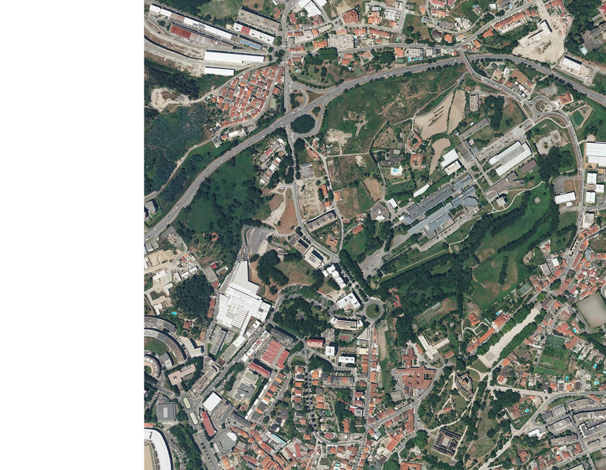

←
Formulário de Ocorrência
Tipo de Ocorrência
Buracos na Estrada
Email
📧
Localização
📍
Código Postal
Descrição
Perto da passadeira, existe um buraco de grandes dimensões que representa um perigo para os condutores e peões. O buraco está localizado na faixa de rodagem, e tem aproximadamente 50 metros de diâmetro e 15profundidade. A sua presença tem causado dificuldades no trânsito, especialmente para veículos de duas rodas, que têm de desviar-se para a faixa oposta, colocando em risco a segurança de todos. A situação persiste desde meados de fevereiro, e apesar de vários condutores terem sinalizado o problema, não parece ter sido resolvido até ao momento.
📝
